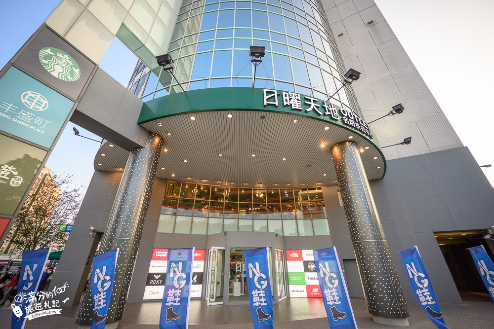
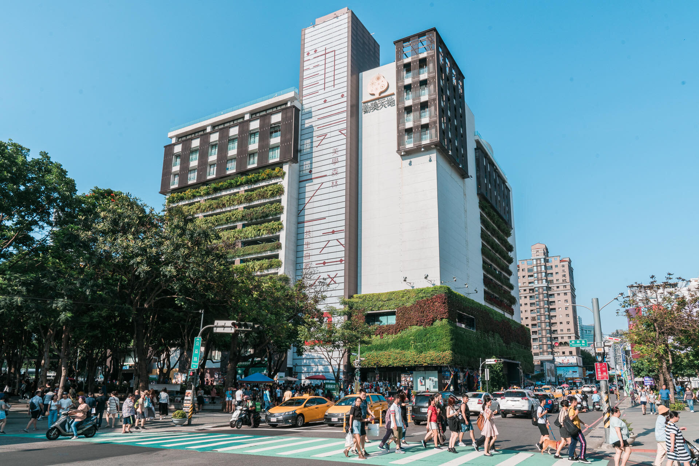

|
 |  | |
| LaLaport台中 | 日曜天地OUTLET | 勤美誠品綠園道 | 研習心得 |

台中大遠百以Top City 大遠百（購物中心）作為品牌識別，為遠東百貨首間第四代店型，建築外觀以巨型傲人的帆船為意象，
與新光三越台中中港店比鄰，建築總樓板面積約54,000坪（178,895.28平方公尺），營業面積約36,000坪，
為遠東百貨分店中營業面積最大的分店，也是遠東百貨旗下全國單店營業額最高的一家，也是台中市單店營業額第二名的百貨公司，
營運三年即達成百億業績，2022年營收突破兩百億元，2023年營業額達214億元。